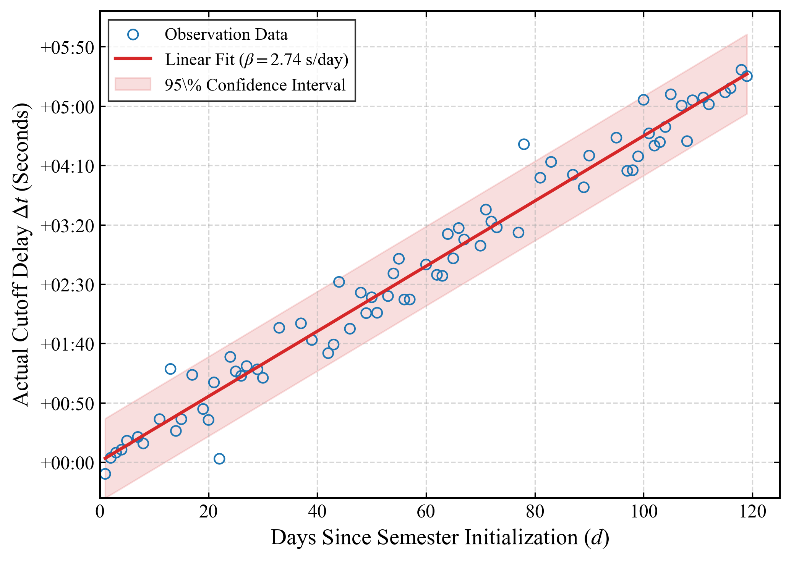

为了实现极限状态下的成功洗浴，我们对紫荆公寓洗浴系统的底层客观环境进行了精确建模。研究发掘了两大核心漏洞：异步时钟漂移（Asynchronous Clock Drift） 与 残存热力池（Residual Thermal Pool, RTP）。

Figure 2. System Hardware Architecture. 华清大学紫荆学生公寓淋浴系统硬件架构与实验环境。(a) 无隔板三节点拓扑空间；(b) 顶置式末端流体输出节点；(c) 存在时钟漂移漏洞的异步计费与时序控制终端；(d) 核心温度调节枢纽与 RTP 释放阀。
1. 时钟漂移漏洞 (Clock Drift)
洗浴计费终端缺乏网络时间协议（NTP）同步。随着学期推进，内置晶振的误差逐渐累积，实际停水时间 $T_{cutoff}$ 可建模为：
Tcutoff(d) = Tddl + β · d + N(0, σ²)
实测表明，到学期中后段，该漏洞通常能提供长达 4 至 5 分钟的初始延迟容忍度（Delay Tolerance）。

Figure 3. Clock Drift Accumulation. 120 天周期内的计费机器时钟偏移实测散点图与线性拟合。这宝贵的几分钟构成了本策略的第一层“时间护城河”。
2. 残存热力池机制 (RTP)
当系统切断主水源后，通过将混水阀强制旋转至极冷档位，可触发物理旁路。冷水在喷出前，会将管路死区体积（Dead Zone Volume, $V_{dz}$）内残留的高温水排出。其水温依赖于上一位使用者的离开时间 $\tau_{idle}$，为后续洗浴提供了极其宝贵的 1.5 ~ 3.5 秒纯热水补偿。